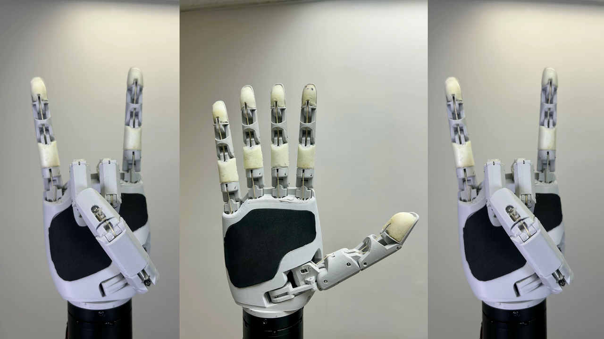
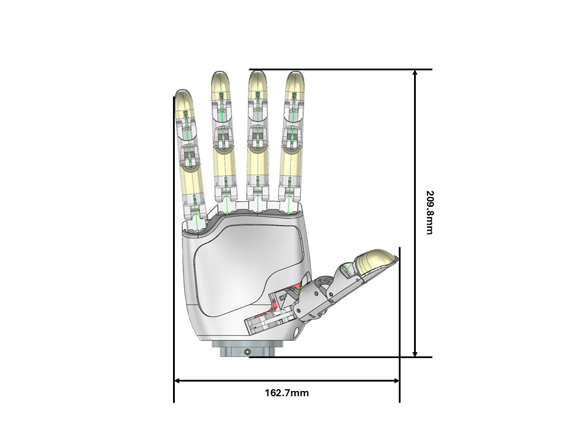
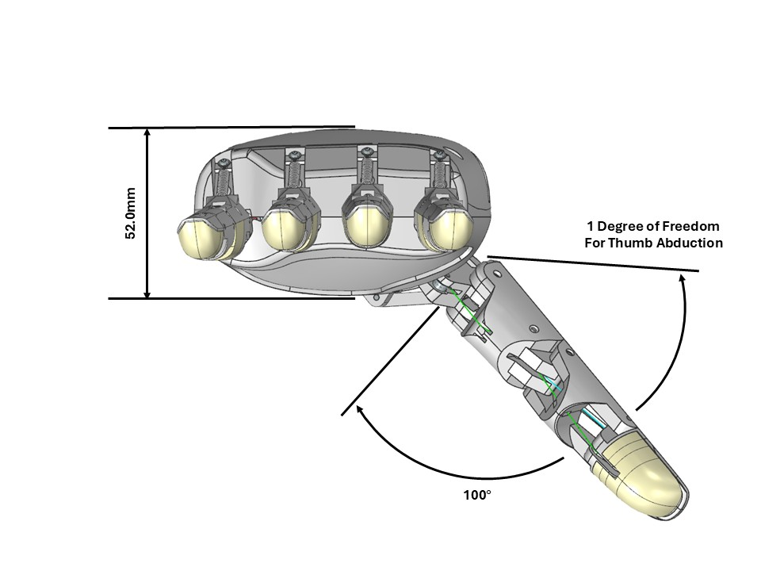
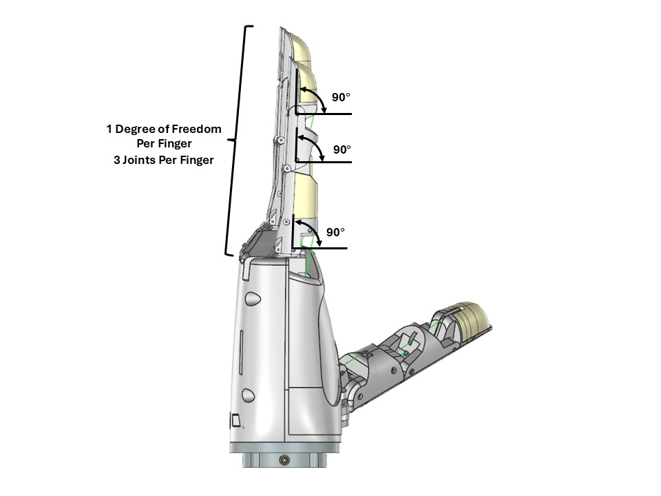
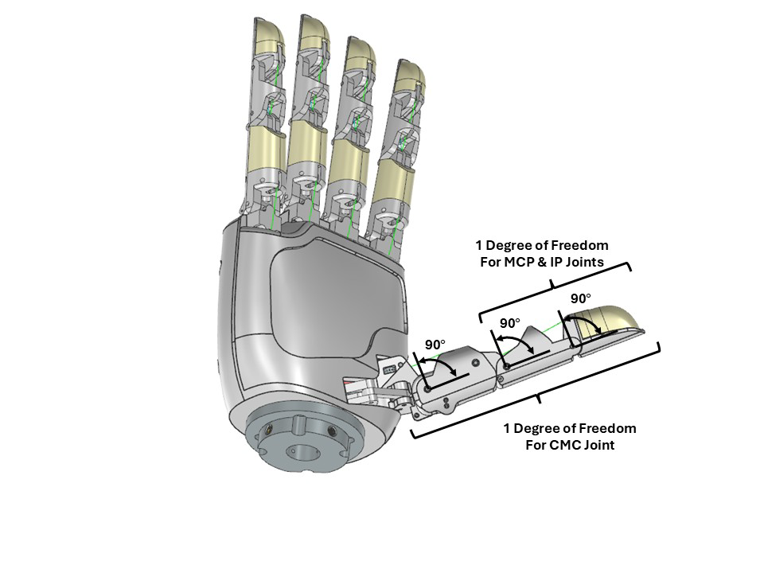
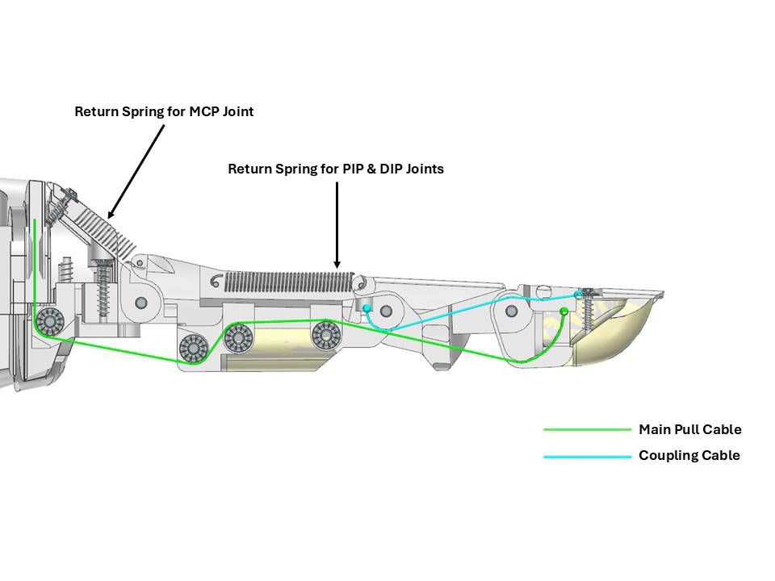
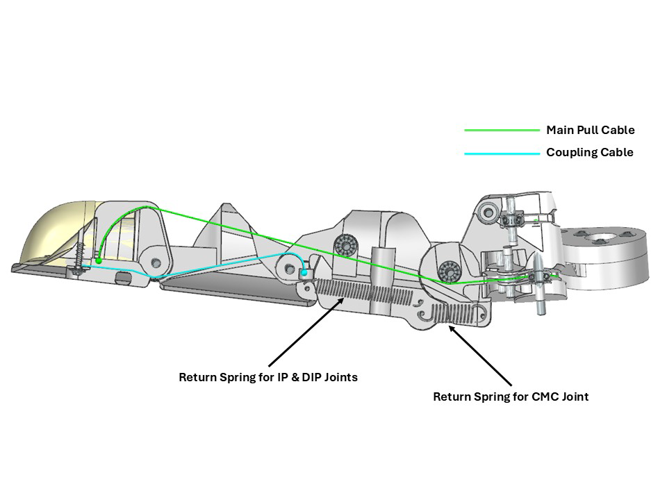
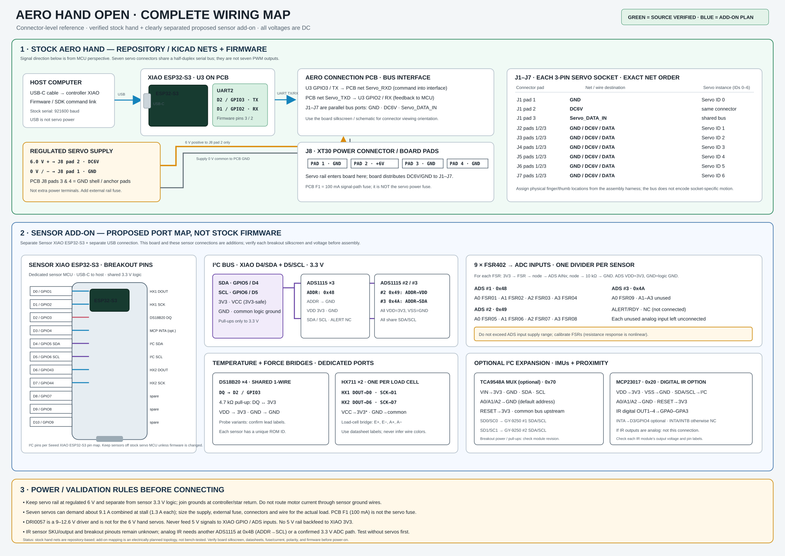

Aero Hand Open
A tendon-driven research hand, built to be understood, assembled, and controlled. Explore the hardware, inspect the mechanisms, or move the live digital twin.

Designed to be explored







Explore the digital twin
Take a quick, guided tour of the hand model, motion controls, and live telemetry.
The tour only explains the interface. It will not connect hardware, start your camera, or move a physical hand.
Hardware & Sim Telemetry
Target:digital_twin_bridge.py
With your hand visible, capture a relaxed open hand and then a comfortable fist. This adjusts visual retargeting only; it does not calibrate or move physical hardware.
| Actuator Channel | Current | Status |
|---|
To start real-time mirroring from your terminal:
python simulation/digital_twin_bridge.py --port COM3 --ws
• 50 Hz Gazebo, MuJoCo, and Unity WebSocket synchronization.
Aero Hand Studio IDE & Compiler
A full-featured VS Code & Antigravity-inspired code editor right in your browser. Inspect, edit, recompile, and execute simulation models, telemetry bridges, firmware scripts, and kinematics live.
Electronics & Wiring Architecture
Full board pinout and wiring schematic derived from the repository KiCad schematic and PCB layout. Distinguishes verified stock circuitry from proposed sensor expansions.
• 100 mA PTC Resettable Fuse: Protects MCU GPIO against accidental bus short-circuits.
• Decoupling & Filtering: 100 µF bulk electrolytic + 100 nF ceramic capacitors smooth motor inrush currents.
Simulation Engine Hub
First-class digital twin integration across the industry's top three robotics simulation platforms. Stream angles, mirror motions, and feed fingertip forces back into the physics loop.
JointPositionController systems and a JointStatePublisher for bidirectional mirroring.
gz sim -r simulation/world_right_twin.sdf
python simulation/mujoco_digital_twin.py --dry-run
ArticulationBody controller, live WebSocket telemetry listener, and collision force calculation.
simulation/unity/AeroHandDigitalTwin.cs
Bidirectional Bridge & Sensor Telemetry
• Sim → Real Hand (Mirror Mode): Reads simulator slider/pose outputs, translates through inverse tendon model, and commands physical servos.
• FSR Sensor Ingestion: Connects to an Arduino running
aero_hand_fsr_sensor.ino on a second COM port, reading 5 channels of tactile force (0–15 N) and piping into the twin.
python simulation/digital_twin_bridge.py --port COM3 --ws
# With Arduino FSR pressure sensors:
python simulation/digital_twin_bridge.py --port COM3 --sensor-port COM4
# Mirror mode (Sim drives hand):
python simulation/digital_twin_bridge.py --port COM3 --mirror
# Standalone dry-run demo:
python simulation/digital_twin_bridge.py --dry-run
Firmware & Communication Protocol
Dual-core FreeRTOS firmware running on Seeed XIAO ESP32-S3. Manages high-speed host USB framing (921,600 baud), half-duplex servo bus arbitration (1 Mbps), non-volatile calibration, and FSR sensor streaming.
16-Byte Serial Frame Format (Click Byte to Inspect)
Supported Protocol Opcodes
Python SDK & Control
Clean, idiomatic Python library for controlling the Aero Hand Open. Includes kinematic forward/inverse mapping, trajectory smoothing, live telemetry, and an interactive calibration GUI.
pip install aero-open-sdk
aero-open-gui
cd sdk && pip install -e .
from aero_open_sdk.aero_hand import AeroHand # Connect via USB serial (COM3 on Windows, /dev/ttyACM0 on Linux) hand = AeroHand(port="COM3", baudrate=921600) # Run homing routine (required on initial startup) hand.send_homing() # Command 7 joint angles in degrees: # [thumb_abd, thumb_flex, thumb_mcp, index, middle, ring, pinky] hand.set_joint_positions([45.0, 25.0, 40.0, 75.0, 75.0, 75.0, 75.0]) # Read back live telemetry currents = hand.get_actuator_currents() print("Actuator currents (mA):", currents) hand.close()
from aero_open_sdk.aero_hand import AeroHand hand = AeroHand(port="COM3") # Define keyframes: (7-dof pose degrees, duration seconds) gestures = [ ([0, 0, 0, 0, 0, 0, 0], 0.8), # Open palm ([45, 30, 50, 80, 80, 80, 80], 1.2), # Full power grasp ([10, 10, 10, 20, 0, 0, 0], 1.0), # Peace sign ([0, 0, 0, 0, 0, 0, 0], 0.8), # Reset ] # Executes cubic/linear spline interpolation smoothly hand.run_trajectory(gestures) hand.close()
Joint Ranges & Hardware Limits
ROS 2 & Teleoperation Suite
Built for ROS 2 Humble Hawksbill. Includes low-latency serial hardware bridges, teleoperation retargeting from Manus data gloves or MediaPipe vision, and reinforcement learning policy deployment.
/aero_hand/actuator_control
/aero_hand/actuator_states
ActuatorControl.msg (float64[7])
aero_hand_open_rl, implementing a trained policy from MuJoCo Playground for in-hand manipulation. Run the communication node in Terminal 1 and deploy the RL policy in Terminal 2:
ros2 run aero_hand_open aero_hand_node
# Terminal 2: RL deployment node
ros2 run aero_hand_open_rl rl_z_rotation_deploy
Community & Open Source
Connect with robotics researchers worldwide, contribute improvements, read in-depth guides, or order hardware components.
Dual Open-Source Licensing
aero-open-sdk), ROS 2 packages, and simulation bridges. Free for academic and commercial use with attribution.